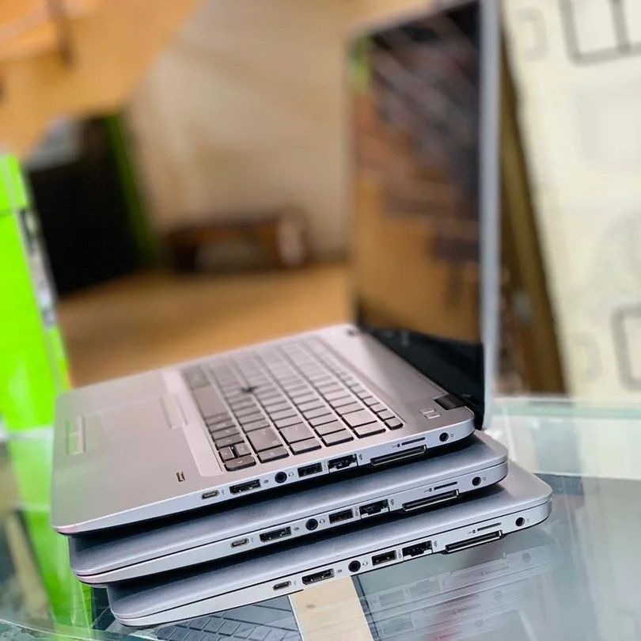
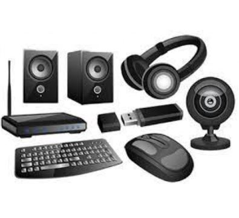

KANZATECH SOLUTIONSYour Trusted IT Partners
Our Story
KanzaTech Company which is an innovative tech company committed to empowering businesses and promoting
creativity by providing IT services and software solutions was formed in 2018 by innovative business owners
Jovita Kanza
and Daphine Nambafu who have a common interest in technology to solve challenges. With 5 years of experience in
software
development and IT consulting, Jovita and Daphine set out to create a company that would revolutionize the
way
businesses operate in the digital age.
Our Mission:
At KanzaTech Solutions,, our mission is clear to building healthier communities by solving problems
using technology.
Through offering specialized software solutions and knowledgeable IT products & services, we enable
companies of all
sizes to
prosper in the digital era. Our dedication lies in providing dependable, and expandable
technological solutions that stimulate growth, production, and efficiency.
Vision
To be a successful global technology company trusted by its customers for service excellence, caring for its
employees and collaborating with our customers to deliver innovative and value driven ICT products and
services.
Products and Services.
Computer accessories; We provide a wide range of products at our computer accessories store that are
intended to
improve your computing experience. For instance, we have all the high-speed routers, keyboards, mice,
monitors,
and other
accessories you need to maximize your setup.
Software Development; we specialize in crafting high-quality software solutions tailored to meet the unique
needs of our clients ranging from web development and mobile apps to custom software programs.
Information Technology Management; Our IT services offer proactive monitoring, maintenance and support for
your
IT infrastructure, ensuring optimal performance, security, and reliability at all times.
Jovita Kanza (CEO & Co-Founder): With a background in software engineering and a visionary mindset, Jovita
leads our team with a fixed commitment to innovation and excellence.
Daphine Nambafu (Cloud Engineer & Co-Founder): Daphine's expertise in IT infrastructure ensures that our
solutions are not only technologically advanced but also seamlessly integrated into our clients'
operations.

Angela Adisa (Head of Software Development): Angela oversees our software development team, ensuring that
our
products are built with the latest technologies and best practices to meet the evolving needs of our
clients.
What Sets Us Apart
At KanzaTech Solutions, our dedication to providing our clients with outstanding value sets
us apart from the competition. With our special combination of innovative problem-solving skills, and
customer-focused methodology, we can take on the most challenging tasks and produce outcomes that go above
and
beyond.
Achievements
KanzaTech Solutions has established a solid reputation for quality and creativity in the tech
sector over the years. Our track record demonstrates our commitment to delivering high-quality results, as
evidenced by our successful software installations and quality Products.
For more details about us;
blog
Join us
contact us: +256 704279303/+256 787346687

